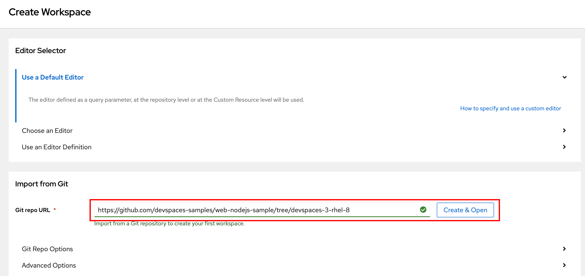
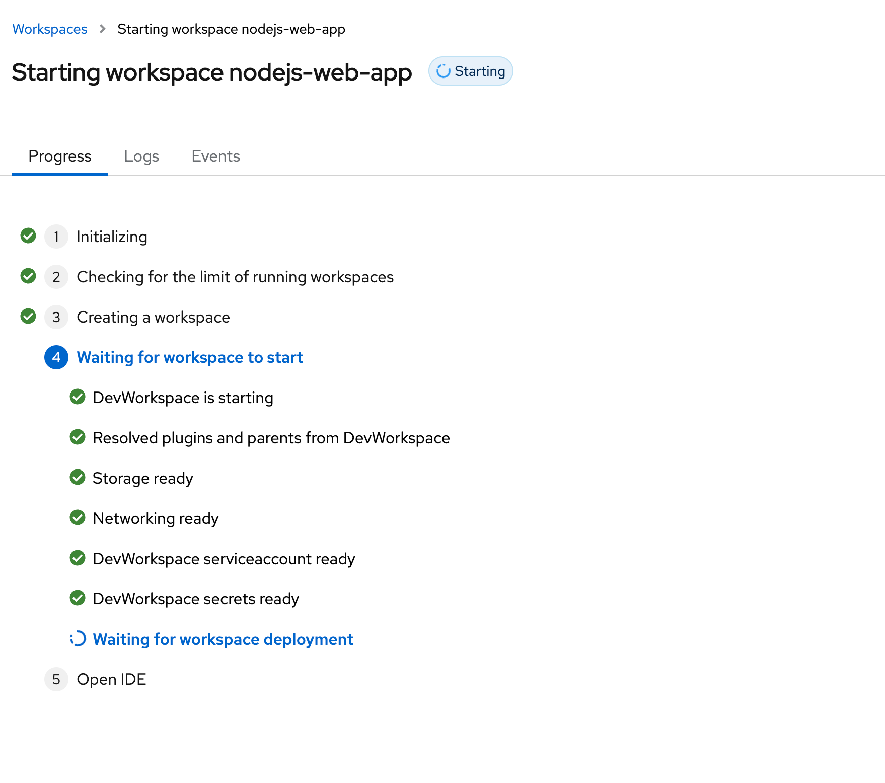
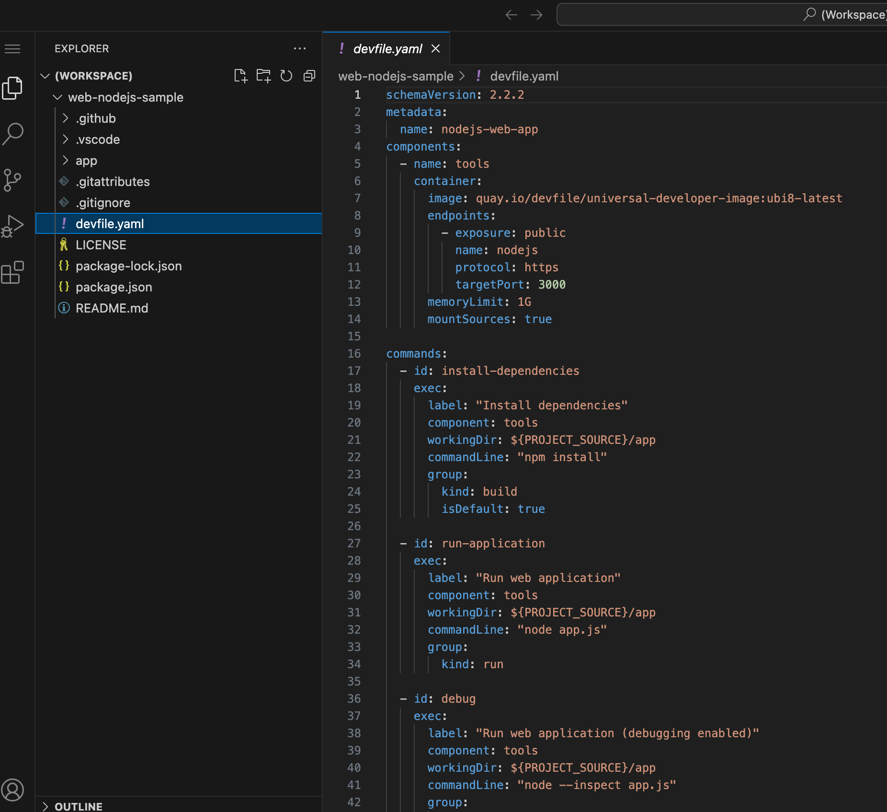
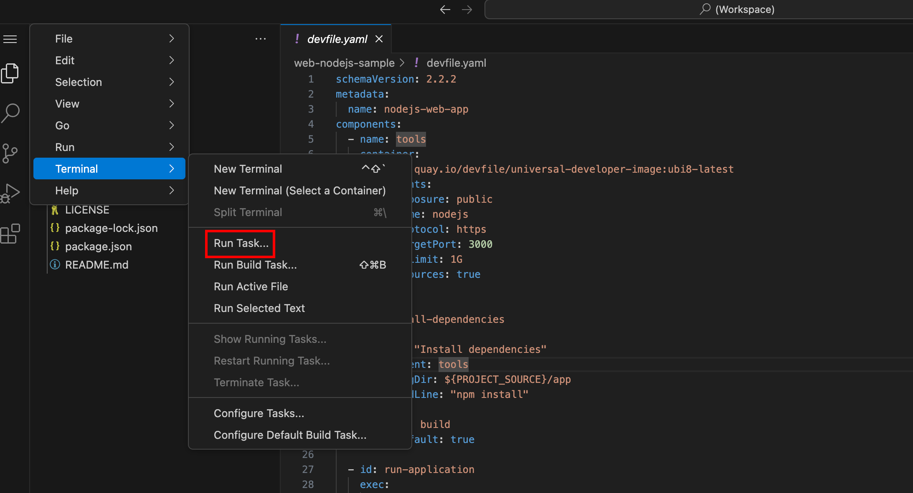
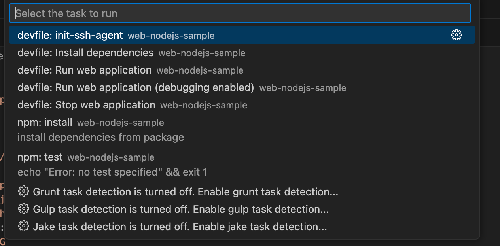
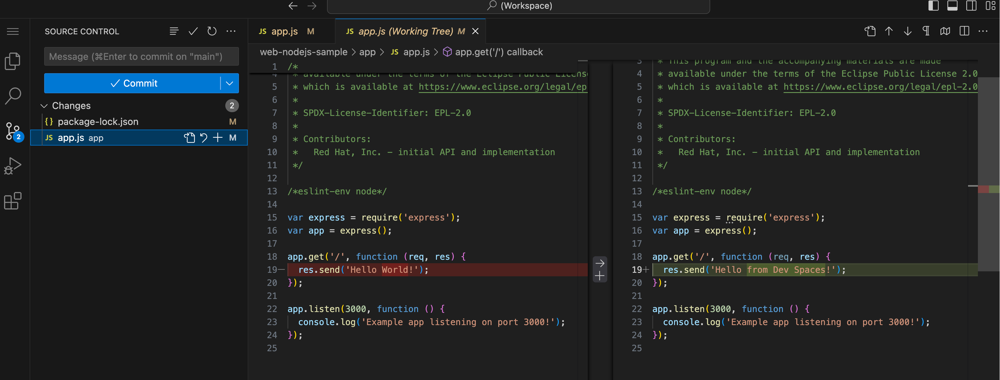
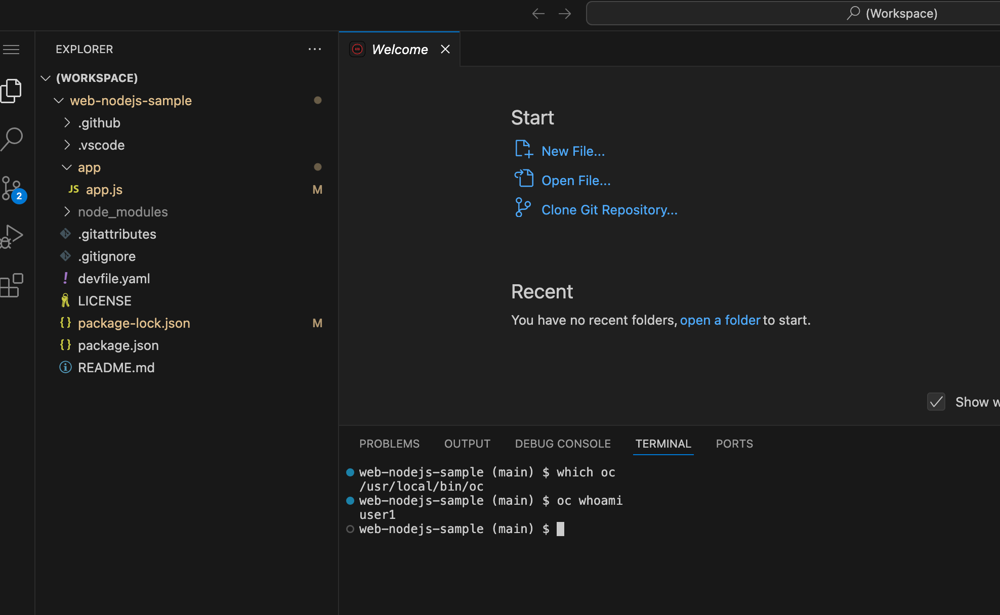

Creating Workspaces
You can create a Workspace using different ways:
-
Devfile: You can create a workspace by providing a devfile, which is a YAML configuration that defines the workspace environment.
-
Dashboard Template: Red Hat OpenShift Dev Spaces offers pre-configured workspace templates for common development stacks. You can launch these from the Dev Spaces dashboard page.
-
Git repository: You can create a workspace directly from an existing Git repository.
Devfiles are covered in detail in a separate chapter. This is the most common and flexible approach, allowing you to customize the Workspace environment to suit your needs.
This chapter will cover launching Workspaces using Git repositories and the Dashboard Templates.
Creating a Workspace using a Git Repository
You can use a Git repository URL in your browser to launch a new workspace that contains a clone of a Git repository. This way, you can clone a Git repository that is hosted on GitHub, GitLab, Bitbucket or Microsoft Azure DevOps server instances.
A number of useful starter examples for various programming language runtimes and frameworks is available at https://github.com/orgs/devspaces-samples/repositories.
Launching Workspaces using Dev Spaces URL
The Dev Spaces dashboard is an intuitive, easy to use web based user interface to launch and manage workspaces. You can also create a workspace by using the Dev Spaces root URL and then appending the Git repository URL and various other settings as URL parameters to the root URL.
If your Dev Spaces fully qualified domain name (FQDN) is https://openshift_dev_spaces_fqdn, then you can launch a workspace by navigating to:
For example, to open the source code of a GitHub repository in a Dev Spaces workspace:
The above URL creates a new workspace with a clone of the default branch in the Git repository (usually main, but it depends on what branch you have configured as the default).
To start a new workspace with a clone of the staging branch:
Replace staging with any other branch in your repository to open the source code tree of that branch.
If you have a pull request in your GitHub repository with an ID of 100, then to open the code in the PR:
Consult the product documentation at https://docs.redhat.com/en/documentation/red_hat_openshift_dev_spaces/3.16/html-single/user_guide/index#starting-a-workspace-from-a-git-repository-url for more examples, and for URL examples for other source control systems like GitLab, BitBucket, Azure DevOps etc.
Lab: Create a Workspace using a Git Repository
Pre-requisites
You must have installed and configured a Dev Spaces instance in the second course in the learning path (Red Hat OpenShift Dev Spaces Administration). Both the admin and user1…user5 users must be allowed to log in using the password openshift23.
Steps
-
Log in to Dev Spaces as the
user1user. -
Inspect the GitHub repository at https://github.com/che-samples/web-nodejs-sample. This repository contains the source code for a simple Node.js web application. You will create a workspace and clone this repository in the next steps. Inspect and review the
devfile.yaml, which is the Devfile for this application, and it is always stored at the root of the Git repositoryYou can also import a Git repository without a devfile.yaml. In such a case, Dev Spaces will use Red Hat’s Universal Developer Image (UDI) as the base image, if a base container image is not provided in thedevfile.yaml. UDI is a large container image containing the development tools and runtimes for a number of popular programming languages. You will learn about UDI in a separate section in theDevfileschapter. -
Fork this repository to your GitHub account.
-
In the Dev Spaces Dashboard page, enter
https://github.com/<your_github_userid>/web-nodejs-samplein theGit Repo URLfield in theImport from Gitsection, and clickCreate & OpenFigure 1. Launch a Workspace from Git -
You will be prompted to trust the authors of this Git repository. Click
Continue. -
Wait for a few minutes while the large UDI image is downloaded and the workspace is created
Figure 2. Workspace creation in progress -
After a while, the workspace should load with the VSCode web IDE, with the source code from the Git repository cloned in the workspace.
Figure 3. Workspace with source code -
You can now work with this project just like you would use VSCode installed on your local workstation. You can open a terminal and run commands like
npm install, npm test, npm start etc. However, thedevfile.yamlhas provided some convenient commands listed under thecommandssection. -
Inspect the
devfile.yamlin the Workspace. Note the commands under thecommandsattribute. These commands are available as VSCodeTasksin the editor menus. Expands the menu to the left of theEXPLORER(three vertical bars), and clickTerminal > Run TaskFigure 4. VSCode Task Menu -
You will be shown a list of tasks supplied by the devfile. Click
Show all Tasksto see the full task listFigure 5. All Tasks -
Run the
devfile:Install dependenciestask, which runsnpm installand fetches all the dependencies for the project. -
Next, run the
devfile: Run web applicationtask. A pop in the right bottom corner informs you that the application is running and listening on port3000and that the web application is available for preview. ClickOpen in New Tab, and then clickOpenin the following prompt. You should seeHello Worldprinted as output. -
Press
Ctrl-Cto terminate the application in the terminal window at the bottom.
Optional Lab Steps
-
Make some changes to the application source code at
app/app.js. Change the welcome message. Re-run the application and verify that your changes are reflected. -
If you have configured GitHub authentication as per set up in the second course, your GitHub ID will be used in your workspace to track source changes. Run
git statusto see the changes you made and then rungit addandgit commit, followed bygit pushto push your changes back to your forked repository. Your Git workflow must work similar to your local workstation. You can also view changes and work with Git using the Git menu in VSCode in the left sidebar:Figure 6. Git menu in VSCode -
Since the workspace uses the UDI base image, OpenShift client tools should be available. Run
oc whoamiand verify thatuser1is displayed. The OpenShift authentication tokens are automatically injected into the workspace. You can directly deploy the application to OpenShift and manage it from within the workspace.Figure 7. OpenShift client tool